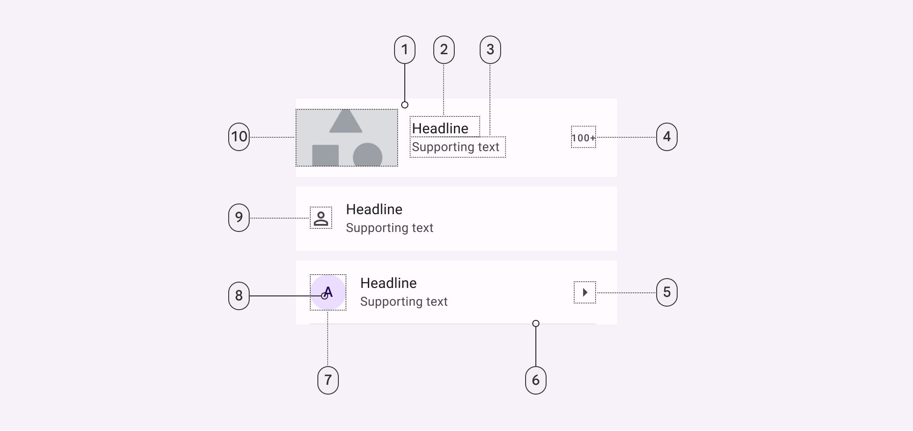
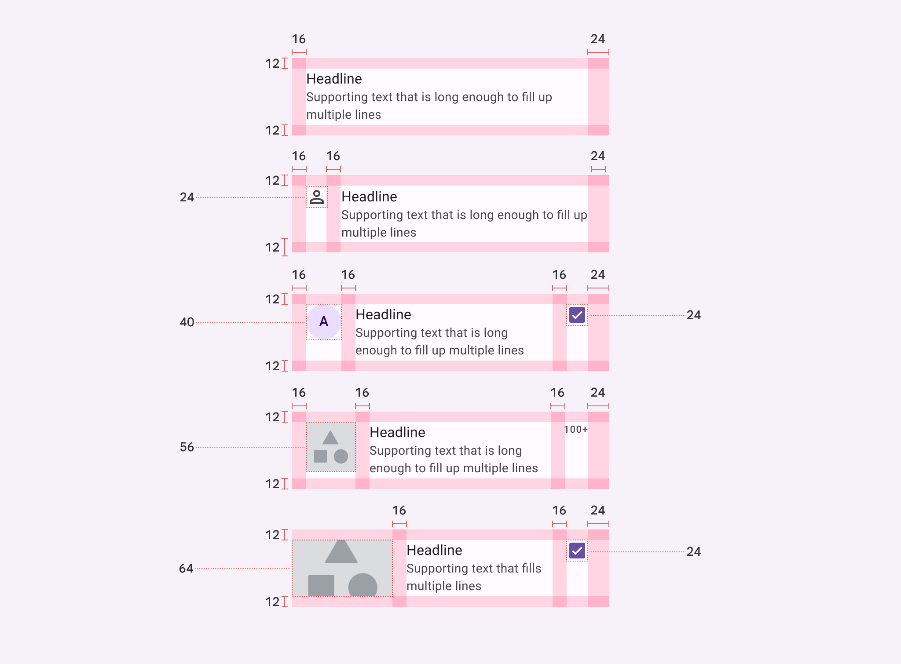

质感设计-组件-聚合组件-列表
1. 列表
列表（List）是连续的、垂直的、带有索引的文本和图片。列表可以帮助用户快速找到特定条目，施加动作。列表条目要按照逻辑顺序，比如字典序或数字顺序排列。按照列表条目中文字行数划分，列表可以分为单行列表、两行列表和三行列表。列表中的图标、文字和按钮应当按照一致的风格进行设计。
1.1. 列表属性

Figure 1: 列表结构
- 容器（Container）
- 头条（Headline）
- 辅助文本（Supporting text）
- 后置辅助文本（Trailing supporting text）
- 后置图标（Trailing icon）
- 分隔符（Divider）
- 前置肖像容器（Leading avater container）
- 前置肖像标签（Leading avater label text）
- 前置图标（Leading icon）
- 前置视频预览图（Leading video thumbnail）
| 元素 | 设计属性 | 职责 | 值 |
|---|---|---|---|
| 容器 | 色彩 | 表层色彩 | md.sys.color.surface |
| 形状 | 无 | md.sys.shape.corner.none | |
| 层叠高度 | 0级 | md.sys.elevation.level0 | |
| 单行容器 | 高度 | 56dp | |
| 两行容器 | 高度 | 72dp | |
| 三行容器 | 高度 | 88dp | |
| 头条 | 色彩 | 表层上层色彩 | md.sys.color.on-surface |
| 字体 | 大号正文 | md.sys.typescale.body-large.font | |
| 行高 | 大号正文 | md.sys.typescale.body-large.line-height | |
| 尺寸 | 大号正文 | md.sys.typescale.body-large.size | |
| 字间距 | 大号正文 | md.sys.typescale.body-large.tracking | |
| 字重 | 大号正文 | md.sys.typescale.body-large.weight | |
| 辅助文本 | 色彩 | 表层上层色彩变体 | md.sys.color.on-surface-variant |
| 字体 | 中号正文 | md.sys.typescale.body-medium.font | |
| 行高 | 中号正文 | md.sys.typescale.body-medium.line-height | |
| 尺寸 | 中号正文 | md.sys.typescale.body-medium.size | |
| 字间距 | 中号正文 | md.sys.typescale.body-medium.tracking | |
| 字重 | 中号正文 | md.sys.typescale.body-medium.weight | |
| 后置辅助文字 | 色彩 | 表层上层色彩变体 | md.sys.color.on-surface-variant |
| 字体 | 小号标签 | md.sys.typescale.label-small.font | |
| 行高 | 小号标签 | md.sys.typescale.label-small.line-height | |
| 尺寸 | 小号标签 | md.sys.typescale.label-small.size | |
| 字间距 | 小号标签 | md.sys.typescale.label-small.tracking | |
| 字重 | 小号标签 | md.sys.typescale.label-small.weight | |
| 后置图标 | 色彩 | 表层上层色彩变体 | md.sys.color.on-surface-variant |
| 尺寸 | 24dp | ||
| 色彩（选中） | 主色彩 | md.sys.color.primary | |
| 色彩（未选中） | 表层上层色彩 | md.sys.color.on-surface | |
| 分隔符 | 色彩 | 表层色彩变体 | md.sys.color.surface-variant |
| 高度 | 1dp | ||
| 前置肖像容器 | 色彩 | 主容器色彩 | md.sys.color.primary-container |
| 形状 | 全圆角 | md.sys.shape.corner.full | |
| 尺寸 | 40dp | ||
| 前置肖像标签 | 色彩 | 主容器上层色彩 | md.sys.color.on-primary-container |
| 字体 | 中号标题 | md.sys.typescale.title-medium.font | |
| 行高 | 中号标题 | md.sys.typescale.title-medium.line-height | |
| 尺寸 | 中号标题 | md.sys.typescale.title-medium.size | |
| 字间距 | 中号标题 | md.sys.typescale.title-medium.tracking | |
| 字重 | 中号标题 | md.sys.typescale.title-medium.weight | |
| 前置图标 | 色彩 | 表层上层色彩变体 | md.sys.color.on-surface-variant |
| 尺寸 | 18dp | ||
| 形状 | 无 | md.sys.corner.none | |
| 前置视频预览图 | 宽度 | 114dp | |
| 高度 | 64dp | ||
| 前置图像 | 宽度 | 56dp | |
| 高度 | 56dp | ||
| 形状 | 无 | md.sys.shape.corner.none |
1.2. 列表色彩

Figure 2: 列表色彩
- 表层色彩
- 表层上层色彩
- 表层上层色彩变体
- 表层上层色彩变体
- 表层上层色彩变体
- 表层色彩变体
- 主容器色彩
- 主容器上层色彩
- 表层上层色彩变体
- 表层上层色彩变体
1.3. 列表规范

Figure 3: 单行列表规范1

Figure 4: 单行列表规范2

Figure 5: 两行列表规范1

Figure 6: 两行列表规范2

Figure 7: 三行列表规范1

Figure 8: 三行列表规范2